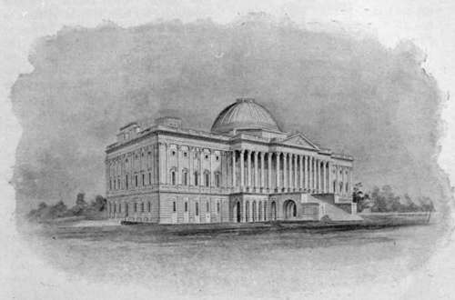
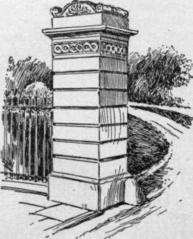

The Central Structure
Description
This section is from the book "The National Capitol. Its Architecture Art And History", by George C. Hazelton, Jr. Also available from Amazon: The National Capitol Its Architecture Art and History.
The Central Structure
Previous to the fire a wooden bridge or covered way only had connected the two wings. As soon as these were restored, and completed in accordance with Latrobe's designs, Bulfinch turned his attention to the central structure, which, except upon the west, he executed after drawings adapted from the designs which Latrobe had made in following —but only where compelled to do so—Thornton's original plan. The former architect in his designs had enlarged the eastern portico, and added substantially the present steps which lead from it to the campus. To prepare for the new work, it was found necessary on the west front to remove a great body of earth, rubbish and old foundation, and to broaden the old foundation of the basement story. On November 18, 1818, the architect reports its new foundation as laid, the cellar walls of the rotunda as carried to a sufficient height to receive the arches intended to form the ground floor, and the external walls of the basement as commenced. The central porticoes and library rooms also were now built. The entire work progressed but slowly, however, as all work for the government is likely to do, and not until December 6, 1824, was the President notified: "The interior of the Capitol is now finished, with the exception of some painting on the stone work, which is not sufficiently seasoned to receive it, and the bas relief ornaments of the rotunda".
The architect's bed evidently had not been one of roses ; for John Trumbull speaks of the " intrigues which perpetually controlled the good intentions and pure taste of Mr. Bulfinch." Trumbull seems to have enjoyed the architect's confidence, and to have been consulted in the plans for the central structure. Bulfinch, at first, proposed a staircase similar to the one in the City Hall in New York, but, as it would be imperfect without a dome light, which, in such a plan, could not come in the center of the building, Trumbull apprehensively asked : " How then can you have the grand dome, even for show?" Such propositions touched the artist's heart. He was then at work upon his historical pictures which are now in the rotunda. In regard to the saloon proposed by the architect for a gallery of paintings, Trumbull complains : " The pictures must hang opposite to the windows, which is the worst possible light; besides which, the columns and projection of the portico will darken the room in some degree, and render what light there may be, partial and unsteady".
" I am glad," he writes to Bulfinch, January 28, 1818, " to know that so much is done, and magnificently done, at the Capitol; but I feel the deepest regret at the idea of abandoning the great circular room and dome. I have never seen paintings so advantageously placed in respect to light and space, as I think mine would be, in the proposed circular room, illuminated from above. The boasted gallery of the Louvre is execrable for paintings—windows on each side, and opposite to each other, and the pictures hanging not only between them but opposite to them. . . . The same objection applies in its full force, to the proposed saloon or gallery in the Capitol; and I should be deeply mortified, if, after having devoted my life to recording the great events of the Revolution, my paintings, when finished, should be placed in a disadvantageous light. In truth, my dear friend, it would paralyze my exertions, for bad pictures are nearly equal to good, when both are placed in a bad light".
The artist, with a view always to his pictures, hastened to suggest compromise plans by which to save the dome, if possible. He proposed to " enclose the basement story of the two porticos, in the same style of piers and arches, as in the wings, and to enter, under each portico, a hall forty-five feet by twenty, with apartments for door-keepers adjoining—to open a passage through the centre of the building, similar in style and dimensions to those already existing in the wings, which I also continue so as to meet each other, thus forming a simple and obvious communication to all parts of the ground plan. I suppose the inner diameter of the grand circular dome to be ninety feet, and the thickness of the wall five. Nine feet within this wall, I carry up a concentric circular wall of equal thickness to the height of the basement story. Between these two walls I place grand quadruple stairs, beginning at the doors of the two halls, and mounting on the right and left, to the floor of the dome vestibule. Twenty feet within this inner wall of the stairs, I raise a third concentric circular wall, of equal, or (if required) greater solidity".
Around the inner walls of the stairs was to be a bronze railing five feet high, with gates at the four entrances, by which it was intended to diminish the floor of the vestibule to seventy feet in diameter, so that the spectator could not approach nearer than ten feet to the wall on which his paintings were to hang, nor view them at a greater distance than eighty feet, which being a little more than three diagonals of the surface, the artist thought not by any means too great.
Trumbull urged also that, whatever dislike there might be to Latrobe's designs in general, there could be none to that for the rotunda and dome; for there the late architect had followed the original intentions, he said, " as projected by Major L'Enfant, drawn by Dr. Thornton, and adopted by General Washington. You will see it so marked on the plan of the city engraved by Thackera & Vallence, in Philadelphia, in 1792." "My plan," he adds, " differs from that finally adopted by him, essentially, in carrying up the grand staircase within the room, thus rendering it a guard to the paintings, and leaving the basement of the two porticos, and the whole substructure, free and applicable to economical purposes. I also omit the grand niches which M. Latrobe had devised, I presume for the purpose of sculpture. ... I hope . . . either upon my plan or some other, you can succeed to preserve the great central circular room. Indeed, I must entreat you to preserve it if possible ; and I repeat, that the loss of that, in my opinion, unrivalled situation and light for my pictures, I shall lose half my zeal".
Trumbull's earnest appeals on behalf of his historical paintings, no doubt, had their influence. Bulfinch wholly discarded Latrobe's Doric temple proposed for a western entrance, and executed this part of the Capitol mainly after his own designs. He adopted a plan by which he gained space for the Library in the western center, and at the same time saved the dome. His administration saw the building at last reach a symmetry and convenience somewhat adapted, for that period at least, to the uses for which it was intended. The fault in placing the structure so close to the brow of the hill as to exhibit a story lower on its western front than on its eastern also was partially remedied through the skill of the architect, who somewhat destroyed the ungainly effect of the basement by a semi-circular glacis, or sloping, sodded terrace.
THE CAPITOL, 1828.
By an act of May 2, 1828, there being no longer any necessity for an architect at the Capitol, that office was abolished, though Bulfinch continued to superintend the work until the latter part of June, 1829. In 1830, when the architect left Washington for New England, the old Capitol was substantially completed, though some minor details were later executed according to directions which he gave before his departure. The building then passed 4 under the direction of the Commissioner of Public Buildings and Grounds, who remained in supervision until the erection of the marble extensions in 1851.
Cuts of this period show three domes, of which the one in the center above the rotunda was covered with copper, and much the largest. This was raised after Bulfinch's own design about 1822; those proposed by Thornton and Latrobe were not so large. " In the rotunda," writes Bui finch, " a bold simplicity has been studied, suitable to a great central entrance and passage to more richly finished apartments. The room is 96 feet in diameter, and of the same height." The length of the entire building at that time was 352 feet 4 inches; the depth of the wings 121 feet 6 inches. The portico and steps, at the main entrance on the east front, projected 65 feet; while those on the west extended 83 feet. The height of the wings, to the top of the balustrade, was 69 feet and 6 inches; to the top of the old dome, 145 feet. Actual measurement shows the width of the present rotunda, which was not altered by Walter in his elevation of the dome, to be 97 feet 8 inches. The cost of the center building from April 20, 1818, to May 2, 1828, is placed in the estimates of the Treasury Department at $1,108,904.43.
The old Capitol covered 67,220 square feet of ground; and its parking contained 22 1/2 acres. In the old days, the park was enjoyed to the fullest extent by the public. Croquet grounds were marked off for the pleasure of those who lived near the Capitol ; and until the commencement of the new terrace, the grounds were yearly the scene of much merriment on Easter, when the sodded embankments were given up to children for egg-rolling. The parking was enclosed until about 1874 by an iron fence except where the nine gates—two for carriages both north and south, two for pedestrians on the east and three for them on the west—opened to the walks and drives. Portions of the original fence and gates are still to be seen about the grounds of the Smithsonian Institution. They recall to the older inhabitants of the District the watchman's cry about nine o'clock, p.m., from the east front of the building: "Close the gates!" The driveway gates were not locked until much later than those to the walks. Congressmen, delayed at the Capitol, were often seen to pick up a convenient stone and break a lock rather than seek peaceful exit.

Continue to: